Mariners All-Time Roster
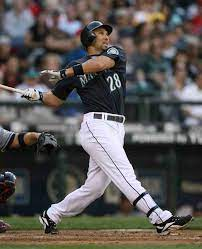
#28 Raul Ibanez
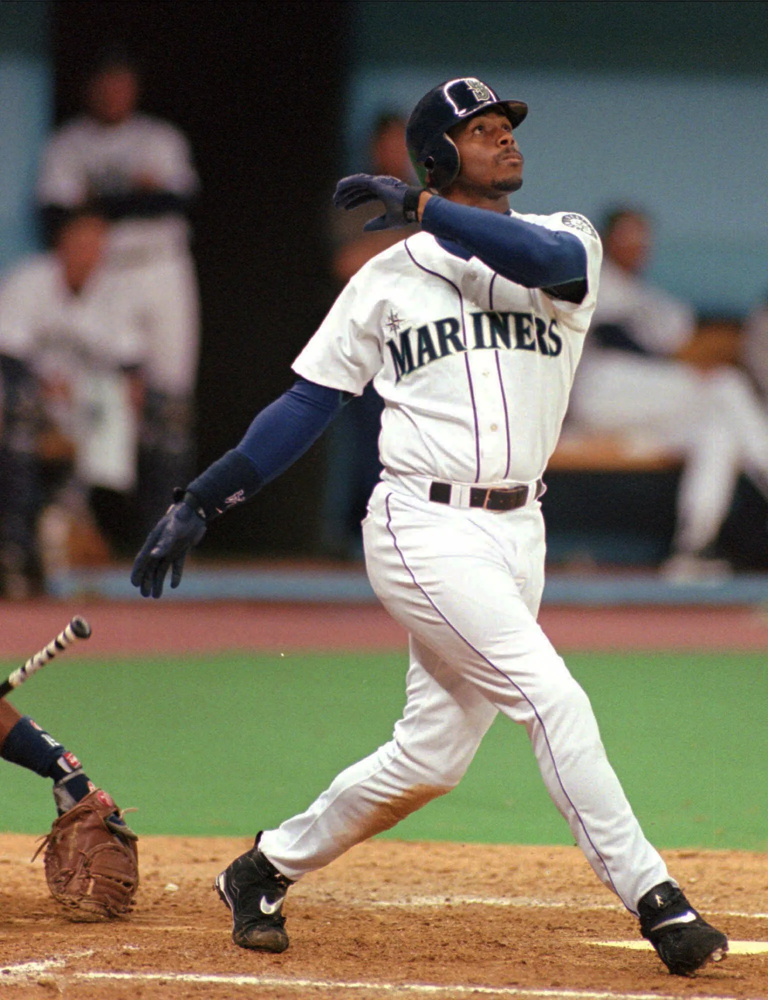
#24 Ken Griffey Jr.
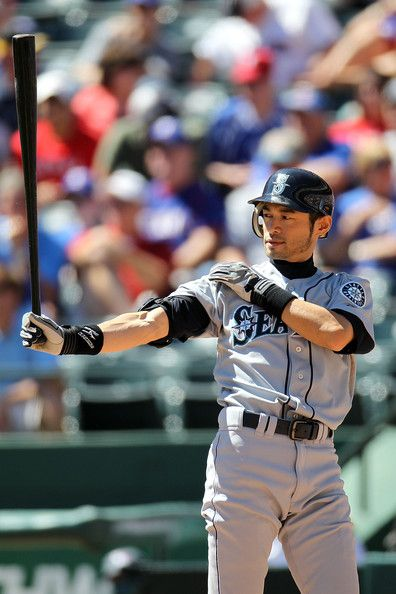
#51 Ichiro Suzuki
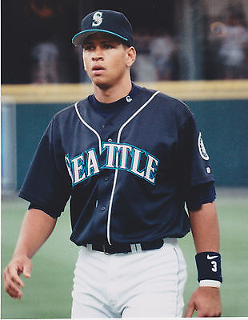
#3 Alex Rodriguez
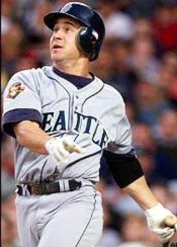
#29 Bret Boone
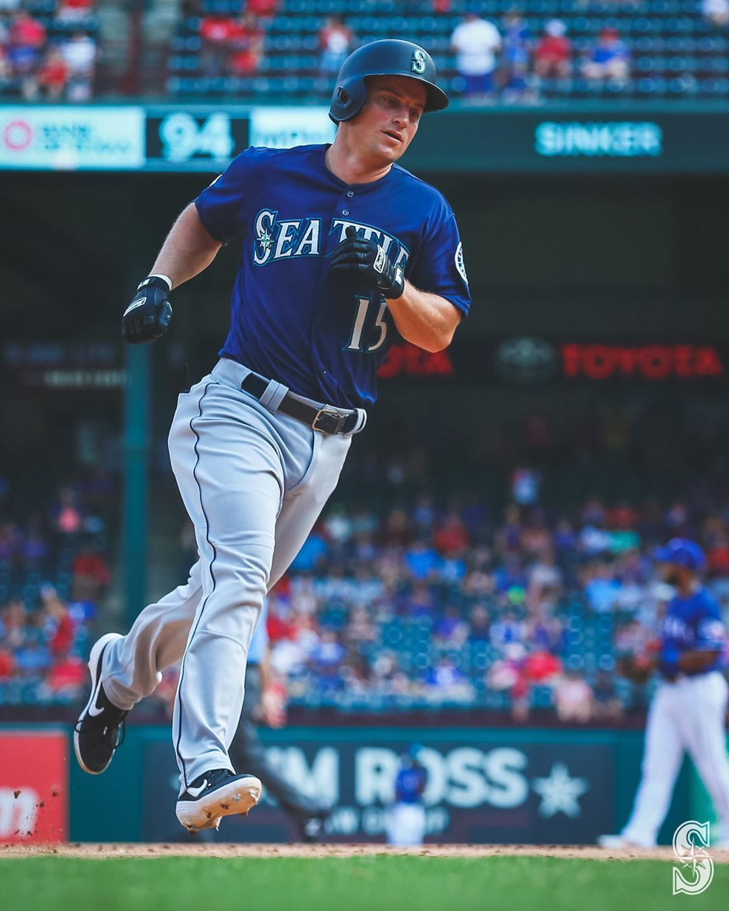
#15 Kyle Seager
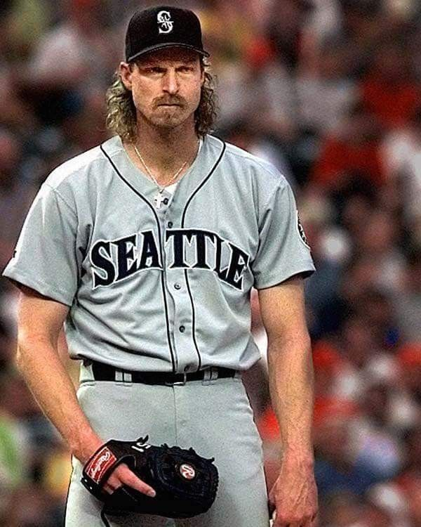
#51 Randy Johnson
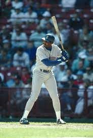
#21 Alvin Davis
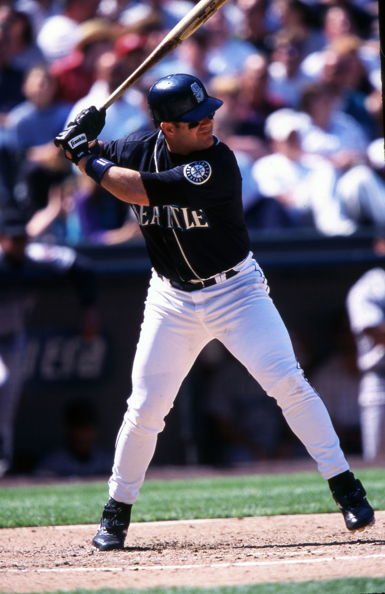
#11 Edgar Martinez
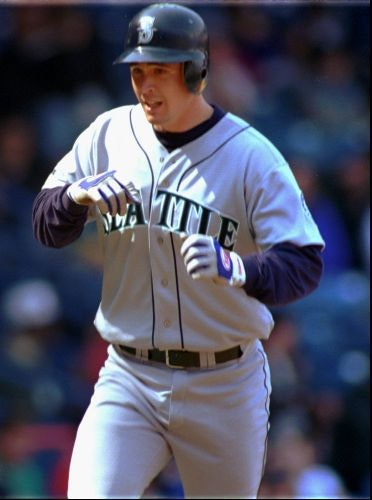
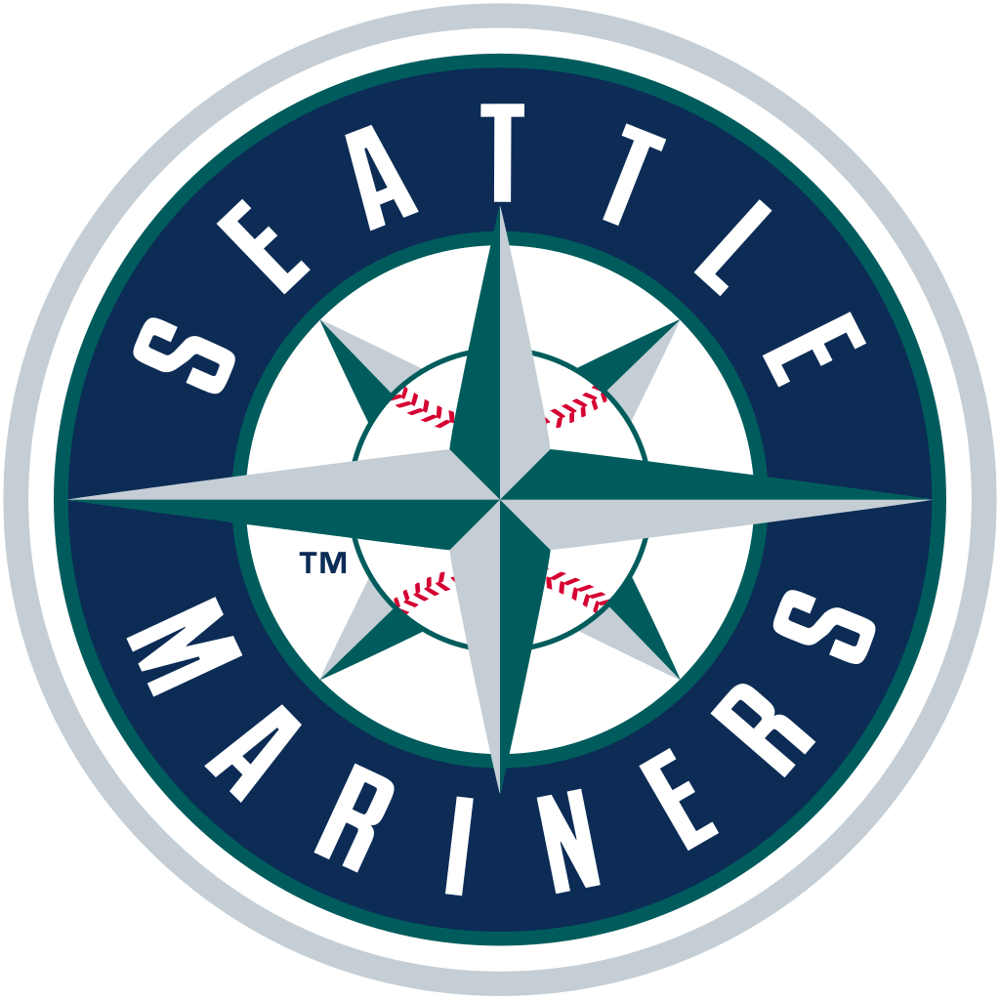
#6 Dan Wilson
Our Selection Process
Our selection process involved a couple key rules:
1) We tried to focus more on the production in Seattle rather than the overall career production of the player.
2) We did not get creative with defensive positioning. For example, we could have moved Jay Buhner to left field, replacing Raul Ibanez.